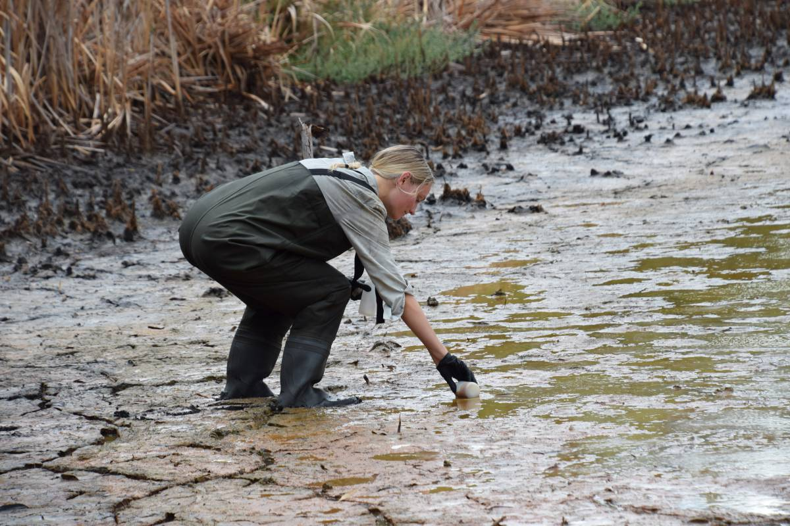

imager package to resize multiple images in a
batchThis was done for a set of field trip photos to be posted to my university's online class system. They were taken with a DSLR that produced 24 megapixel images (6000 × 4000), with file sizes about 6 megabytes. Rather than upload many large images, the following code was used to make smaller (1200 × 800) copies of each image which were written to new files to be uploaded.
First we load the imager package:
library(imager)We then store the directory the images are stored in as a string, and create a vector of filenames in that directory:
idir <- "C:/Users/00028958/OneDrive - The University of Western Australia/My Documents/aaTeaching/ENVT3361 EnvAssess/Field ENVT3361/AFR-photos-2024/"
(flist <- list.files(idir))## [1] "DSC_0873.JPG" "DSC_0874.JPG" "DSC_0875.JPG" "DSC_0876.JPG" "DSC_0877.JPG" "DSC_0878.JPG"
## [7] "DSC_0879.JPG" "DSC_0880.JPG" "DSC_0881.JPG" "DSC_0884.JPG" "DSC_0887.JPG" "DSC_0888.JPG"
## [13] "DSC_0889.JPG" "DSC_0890.JPG" "DSC_0891.JPG" "DSC_0892.JPG" "DSC_0893.JPG" "DSC_0894.JPG"
## [19] "DSC_0895.JPG" "DSC_0896.JPG" "DSC_0897.JPG" "DSC_0898.JPG" "DSC_0899.JPG" "DSC_0900.JPG"
## [25] "DSC_0901.JPG" "DSC_0902.JPG" "DSC_0903.JPG" "DSC_0904.JPG" "DSC_0905.JPG" "DSC_0906.JPG"
## [31] "DSC_0907.JPG" "DSC_0908.JPG" "DSC_0909.JPG" "DSC_0910.JPG" "DSC_0911.JPG" "DSC_0912.JPG"
## [37] "DSC_0913.JPG" "DSC_0914.JPG" "DSC_0915.JPG" "DSC_0916.JPG" "DSC_0917.JPG" "DSC_0918.JPG"
## [43] "DSC_0919.JPG" "DSC_0920.JPG" "DSC_0921.JPG" "DSC_0922.JPG" "DSC_0923.JPG" "DSC_0924.JPG"
## [49] "DSC_0925.JPG" "DSC_0926.JPG" "DSC_0927.JPG" "DSC_0928.JPG" "DSC_0929.JPG" "DSC_0930.JPG"
## [55] "DSC_0931.JPG" "DSC_0932.JPG" "DSC_0933.JPG" "DSC_0934.JPG" "DSC_0935.JPG" "DSC_0936.JPG"
## [61] "DSC_0937.JPG" "DSC_0938.JPG" "DSC_0939.JPG" "DSC_0940.JPG" "DSC_0941.JPG" "DSC_0942.JPG"
## [67] "DSC_0943.JPG" "DSC_0944.JPG" "DSC_0945.JPG" "DSC_0946.JPG" "DSC_0947.JPG" "DSC_0948.JPG"
## [73] "DSC_0949.JPG" "DSC_0950.JPG" "DSC_0951.JPG" "DSC_0952.JPG" "DSC_0953.JPG" "DSC_0954.JPG"
## [79] "DSC_0955.JPG" "DSC_0956.JPG" "DSC_0957.JPG" "DSC_0958.JPG" "DSC_0959.JPG" "DSC_0960.JPG"
## [85] "DSC_0961.JPG" "DSC_0962.JPG" "DSC_0963.JPG" "DSC_0964.JPG" "DSC_0965.JPG" "DSC_0966.JPG"
## [91] "DSC_0967.JPG" "DSC_0968.JPG"We then use a simple loop to sequentially
imager::load.image()imager::imresize() with the argument
scale=0.2imager::save.image(), adding the string _s to
the original file name (i.e. '_s' for
'small')..jpg
as the file extension which prompts the save.image()
function to save as a JPEG file; this is done as the extension seems to
be case-sensitive.This process may take some time! – but it's better than resizing each file manually.
dir.create(paste0(idir,"resized/"))
for(i in 1:length(flist)){
pic <- load.image(paste0(idir,flist[i]))
pic <- imresize(pic, scale=0.2)
save.image(pic,
file = paste0(idir,"resized/",substr(flist[i],0,8),"_s",".jpg"))
}Finally we can see that the new files have been written to the new subdirectory:
list.files(paste0(idir,"resized/"))## [1] "DSC_0873_s.jpg" "DSC_0874_s.jpg" "DSC_0875_s.jpg" "DSC_0876_s.jpg" "DSC_0877_s.jpg"
## [6] "DSC_0878_s.jpg" "DSC_0879_s.jpg" "DSC_0880_s.jpg" "DSC_0881_s.jpg" "DSC_0884_s.jpg"
## [11] "DSC_0887_s.jpg" "DSC_0888_s.jpg" "DSC_0889_s.jpg" "DSC_0890_s.jpg" "DSC_0891_s.jpg"
## [16] "DSC_0892_s.jpg" "DSC_0893_s.jpg" "DSC_0894_s.jpg" "DSC_0895_s.jpg" "DSC_0896_s.jpg"
## [21] "DSC_0897_s.jpg" "DSC_0898_s.jpg" "DSC_0899_s.jpg" "DSC_0900_s.jpg" "DSC_0901_s.jpg"
## [26] "DSC_0902_s.jpg" "DSC_0903_s.jpg" "DSC_0904_s.jpg" "DSC_0905_s.jpg" "DSC_0906_s.jpg"
## [31] "DSC_0907_s.jpg" "DSC_0908_s.jpg" "DSC_0909_s.jpg" "DSC_0910_s.jpg" "DSC_0911_s.jpg"
## [36] "DSC_0912_s.jpg" "DSC_0913_s.jpg" "DSC_0914_s.jpg" "DSC_0915_s.jpg" "DSC_0916_s.jpg"
## [41] "DSC_0917_s.jpg" "DSC_0918_s.jpg" "DSC_0919_s.jpg" "DSC_0920_s.jpg" "DSC_0921_s.jpg"
## [46] "DSC_0922_s.jpg" "DSC_0923_s.jpg" "DSC_0924_s.jpg" "DSC_0925_s.jpg" "DSC_0926_s.jpg"
## [51] "DSC_0927_s.jpg" "DSC_0928_s.jpg" "DSC_0929_s.jpg" "DSC_0930_s.jpg" "DSC_0931_s.jpg"
## [56] "DSC_0932_s.jpg" "DSC_0933_s.jpg" "DSC_0934_s.jpg" "DSC_0935_s.jpg" "DSC_0936_s.jpg"
## [61] "DSC_0937_s.jpg" "DSC_0938_s.jpg" "DSC_0939_s.jpg" "DSC_0940_s.jpg" "DSC_0941_s.jpg"
## [66] "DSC_0942_s.jpg" "DSC_0943_s.jpg" "DSC_0944_s.jpg" "DSC_0945_s.jpg" "DSC_0946_s.jpg"
## [71] "DSC_0947_s.jpg" "DSC_0948_s.jpg" "DSC_0949_s.jpg" "DSC_0950_s.jpg" "DSC_0951_s.jpg"
## [76] "DSC_0952_s.jpg" "DSC_0953_s.jpg" "DSC_0954_s.jpg" "DSC_0955_s.jpg" "DSC_0956_s.jpg"
## [81] "DSC_0957_s.jpg" "DSC_0958_s.jpg" "DSC_0959_s.jpg" "DSC_0960_s.jpg" "DSC_0961_s.jpg"
## [86] "DSC_0962_s.jpg" "DSC_0963_s.jpg" "DSC_0964_s.jpg" "DSC_0965_s.jpg" "DSC_0966_s.jpg"
## [91] "DSC_0967_s.jpg" "DSC_0968_s.jpg"Here's one of the resized photos:

CC-BY-SA • All content by Ratey-AtUWA. My employer does not necessarily know about or endorse the content of this website.
Created with rmarkdown in RStudio using the cyborg theme from Bootswatch via the bslib package, and fontawesome v5 icons.